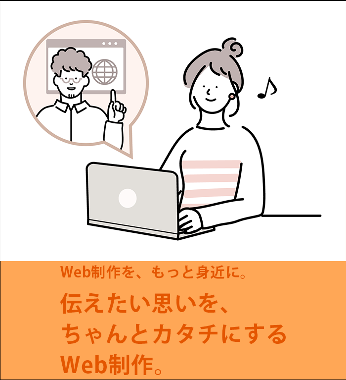

企業のブランドイメージを向上させるためのコーポレートサイトを制作。 会社の理念やサービスを分かりやすく伝えることを目的としました。
信頼感とプロフェッショナルさを表現するため、シンプルで洗練されたデザインを採用しました。 カラーは企業カラーを基調にし、余白を活かして情報が見やすいレイアウトにしました。
アニメーションを活用し、分かりやすく見やすい設計にすることで、ユーザーの視線を誘導する工夫をしました。